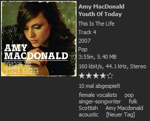

|
Die Tagwolke
|
Die Tagwolke ist meines Wissens nach etwas neues im Bereich
"mp3-Player". Ob sie nützlich ist, mag jeder selbst
entscheiden.
Basisfunktion
Für die Tagwolke werden initial die Eigenschaften Interpret,
Albumname, Genre, Jahr und Jahrzehnt (z.B. "90s") der Titel in der
Medienbibliothel in einen Topf geworfen. Die häufigsten dieser
"Tags" werden dann in einer Wolke angezeigt, wie man sie von vielen
Webseiten her kennt.
Sie können dann z.B. den Tag "00s" oder "90s" anwählen und
bekommen dann alle Titel aus den 2000er Jahren oder den 90ern
angezeigt. Wenn Sie diesen Tag doppelt anklicken (oder die Entertaste
betätigen), wird aus diesen Titeln eine neue Tagwolke erzeugt -
das können Sie fast beliebig fortführen.
Weitere Tags
Das interessante ist nun die Möglichkeit, den Titeln weitere Tags
zuzuordnen, die auch in den mp3-Dateien selbst gespeichert werden.
Z.B. können Sie einem Titel dadurch mehrere Genres zuordnen,
oder andere Kommentare dort angeben, die das Lied klassifizieren.

Das ist natürlich etwas mühsam, das für seine gesamte Medienbibliothek zu machen.
Tags von LastFM
Bei LastFM gibt es nicht nur Cover, sondern auch weitere Tags, die von
der Community gepflegt werden - vielleicht haben Sie ja schon selbst
einige Lieder darüber getaggt.
Nemp kann die häufigsten Tags für ein Lied bei LastFM
abfragen und in der Medienbibliothek speichern. Wählen Sie
dafür die Dateien aus, die sie betaggen möchten und
wählen im Menü "Zusätzliche Tags von LastFM holen".
Hinweis: Das funktioniert nur, wenn die Dateien schon ordentliche Standard-ID3-Tags wie Interpret und Titel haben! Und: das dauert etwas. Erstens ist das Internet langsam, und zweitens werden die Admins bei LastFM
böse, wenn ein Programm die API zu stark strapaziert. Ungefähr 2-3 Dateien pro Sekunde sind ok, mehr nicht.
Mit diesen zusätzlichen Tags wird die Tagwolke dann schon etwas aussagekräftiger.